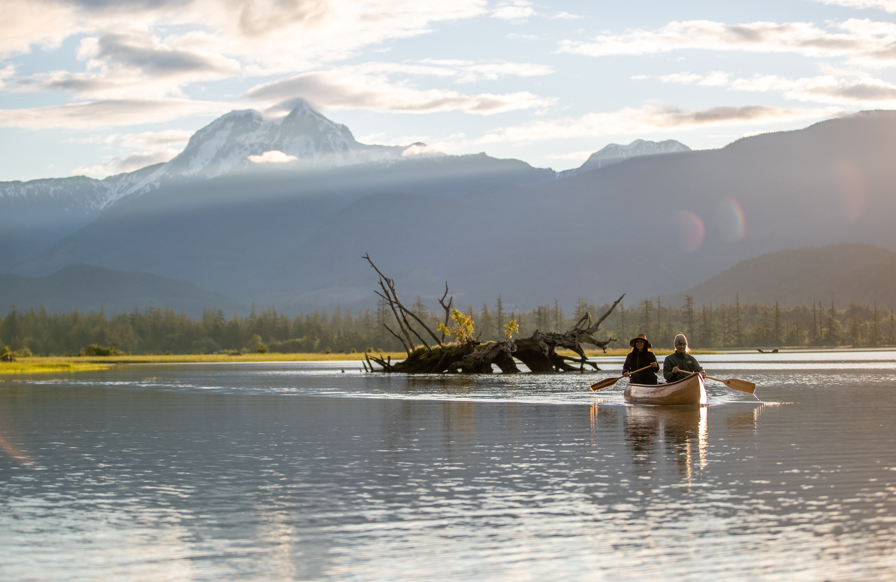
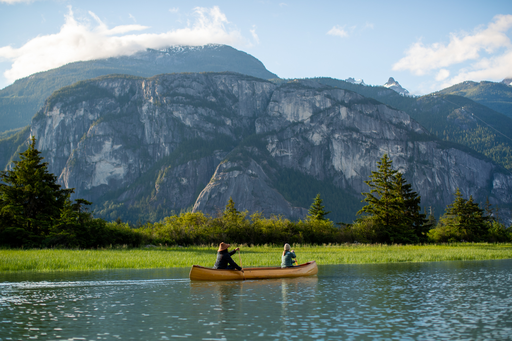
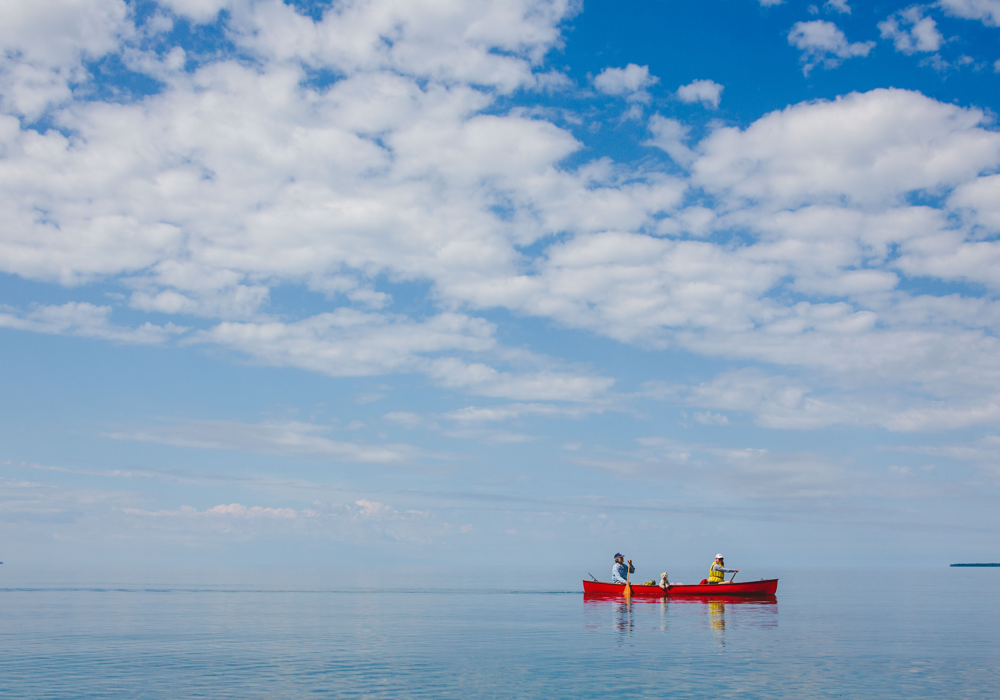

Squamish Estuary
Grass-lined channels between town and the Sound, with the Chief towering overhead. Seals, herons and — in winter — one of the world's great bald eagle gatherings. Go on a rising tide.
Full guide on Sea to Sky Trails →
Glacier-fed lakes, a wildlife-rich estuary and the deep fjord of Howe Sound — all within fifteen minutes of downtown. Here's where to paddle, when to go, and how to get a boat under you.
Book a Rental Explore the SpotsSquamish sits where the Coast Mountains fall into the sea. In a single weekend you can drift a warm forest lake, ride a rising tide through the estuary's grass channels with eagles overhead, and point your bow down Howe Sound — the southernmost fjord in North America. Few places on earth pack this much water into one postcode.

Every spot below is a real local pick — no filler. Lakes for calm days and beginners, the estuary for wildlife, the Sound for when you want the ocean under your hull.

Grass-lined channels between town and the Sound, with the Chief towering overhead. Seals, herons and — in winter — one of the world's great bald eagle gatherings. Go on a rising tide.
Full guide on Sea to Sky Trails →The classic. A sheltered, swimmable lake in Alice Lake Provincial Park, ten minutes north of town. Easy launches, picnic lawns, and warm water by mid-summer.
Full guide on Sea to Sky Trails →
A forest lake right off Highway 99 with rocky bluffs, warm coves and an interpretive trail around the shore. Small enough to explore fully in an afternoon paddle.
Full guide on Sea to Sky Trails →
Launch straight into the fjord from the beach at Porteau Cove Provincial Park. Deep green water, mountain walls on both sides, and the odd curious seal. Go early — the wind builds by noon.
Full guide on Sea to Sky Trails →
A small, walk-in lake loved by locals for its warm water and rope swings. It's a short carry from the parking area — bring an inflatable or travel light.
Full guide on Sea to Sky Trails →
Whistler's gentle river link between Alta Lake and Green Lake — a winding, willow-lined float with mountain views the whole way. We deliver gear to Whistler for it.
Full guide on Sea to Sky Trails →We're a locally owned Squamish rental outfit. Book online, and either pick up in town or have us deliver straight to your launch — Squamish, Whistler or Pemberton, priced by location.
Stable, easy-paddling boats for lakes, the estuary and calm ocean days. Paddles and PFDs are always included.
Canoes fit up to 3 paddlersRigid and inflatable SUPs for lake days and glassy mornings on the Sound. Great alongside a kayak for mixed groups.
Leash & pump included with inflatablesWe drop your gear at most lakes and launch points across the Sea to Sky Corridor and collect it when you're done.
Priced by location — ask when bookingSquamish takes its name from the Skwxwú7mesh word often translated as "Mother of Wind" — and the Sound earns it most summer afternoons. A few local rules keep every paddle a good one:

It depends on the day. For calm, warm water pick a lake like Alice Lake or Brohm Lake. For wildlife and mountain views at water level, paddle the Squamish Estuary on a rising tide. For a bigger adventure, Howe Sound from Porteau Cove offers true fjord sea kayaking — best in the morning before the wind picks up.
Yes. We're a locally owned rental company offering kayaks, canoes and paddleboards by the day, with delivery available across Squamish, Whistler and Pemberton (priced by location). Book online or call ahead in summer — weekends go fast.
The lakes are very beginner-friendly — small, sheltered and warm-ish by mid-summer. The estuary is beginner-friendly at the right tide. Howe Sound is glacier-fed ocean water with strong afternoon winds, so beginners should go early in the day, stay near shore and always wear a PFD.
Squamish's famous thermal wind typically builds late morning and blows strongest through the afternoon in summer — it's why the town is a kiteboarding hub. Plan open-water paddles for early morning or evening; the lakes stay manageable most of the day.
Yes — delivery is available throughout the Sea to Sky Corridor including Squamish, Whistler and Pemberton, priced by location. We can drop gear at most lakes and launch points.
A PFD (included with rentals), layers you don't mind getting wet, sun protection, water, and a dry bag for your phone. The water is cold year-round, so dress for immersion on open water — even on hot days.
The lower river and estuary channels are paddleable for confident kayakers — moving glacier water with braided channels. The upper river is fast and cold and best left to experienced whitewater paddlers. If in doubt, ask us about conditions before you go.
Online booking takes two minutes. Questions about conditions, spots or delivery? Call or email — we're locals, we're on this water every week.